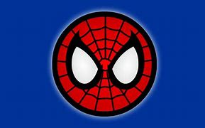

Sometimes student, sometimes scientist and sometimes photographer, Peter Parker is a full-time super hero better known as the web-slinging and wall-crawling Spider-Man. As an orphaned child, Peter was raised by his Uncle Ben and Aunt May. At a science expo, Peter was bitten by an errant radioactive spider which granted him an array of arachnid-based powers. He initially became Spider-Man to use his powers as an entertainer, growing so conceited he did not bother stopping a passerby burglar. In a twist of fate, the same burglar wound up killing Peter's Uncle Ben, leading him to realize that he needed to use his powers responsibly. From then on, Spider-Man became a crime-fighting vigilante.
| Spider | Alias | Earth |
|---|---|---|
| Spider-Man | Peter Parker | 616 |
| Ultimate SM | Miles Morales | 1610 |
| Superior SM | Otto Octavious/Elliot Toliver | 616 |